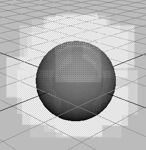

烟效果会从工作区中某个位置，或从选定粒子对象或几何体对象发射烟。该效果会使用随 Maya 软件提供的一系列烟图像（精灵）。可以选择使用自己的图像。必须对生成的烟进行硬件渲染。
准备使用烟效果
使用烟效果之前，应清楚以下问题：
- 一次最多只能对一个对象使用烟效果。
若要对一组 NURBS 曲面应用烟，请首先将每个曲面转化为多边形，然后组合这些曲面。从“多边形”(Polygons)菜单集中，选择修改 > 转化 > NURBS 到多边形(Modify > Convert > NURBS to Polygons)，然后选择网格 > 组合(Mesh > Combine)。
若要对一组多边形曲面应用烟，只需通过网格 > 组合(Mesh > Combine)将这些曲面组合在一起。
- 如果从 NURBS 或多边形对象发射，则对象的大小和形状会影响烟的质量。您将需要使用足够大的对象才能生成足够的烟区域。如果从曲线发射烟，避免使用方向陡然变化的曲线。
- 对同一几何体多次使用烟效果通常非常有用。通过在每次使用烟效果时设定不同的选项，可以创建使用一次难以实现的复杂外观。例如，通过使用两个发射速率和精灵顺序不同的发射器，用户可以创建燃烧雾和蒸汽雾的组合。
- 如果需要为工作区四周的烟移动设置动画，请考虑对粒子对象使用烟效果。您可以对粒子对象使用每粒子表达式，因此您就可以更灵活地改变烟的运动。
- 将经常需要从对象的一部分而非其整个几何体发射烟。在一些情况下，对象中需要烟的一部分不存在几何体。在这种情况下，常见方法是从该区域中一个不可见的几何对象发射。
例如，假设要从中空的排气管末端吹出烟，但管道没有可以方便地发射烟的对象。可以创建正确大小和形状的磁盘，将其放置在管道中，然后对磁盘应用发射器。通过选择“显示 > 隐藏 > 隐藏当前选择”(Display > Hide > Hide Selection)使磁盘不可见。
- 如果创建自己的烟图像（例如，使用如 VizPaint 或 StudioPaint 的绘制软件），请记住在创建图像时要保存 Alpha 通道（透明度数据）。
使用烟效果
- 将您的图像置于当前项目的 /sourceimages 目录中。
- 执行下列操作之一：
- 选择对象或 CV，编辑要发射烟的点、顶点或粒子。
- 若要创建位置发射器，请取消选择所有对象。
- 选择 >
 。
。 - 在“创建烟效果选项”(Create Smoke Effect Options)窗口中设置属性（请参见下面的“编辑烟效果的属性”）并单击“创建”(Create)。
烟效果可创建发射器、发射粒子对象、表达式、湍流场及创建烟所需的其他场。
- 播放动画。
发射粒子在工作区中显示为方形，因为粒子显示为精灵渲染类型。
下面是一个着色 > 对所有项目进行平滑着色处理(Shading > Smooth Shade All)处于启用状态的示例。
 - 对场景执行硬件渲染以查看烟。
有关详细信息，请参见“渲染”。
编辑烟效果的属性
以下各主题将介绍用于调整烟效果的属性。烟效果可在它创建的发射粒子对象中创建多个自定义属性。自定义属性可控制场和发射器属性的组合，以减少未了调整烟而需要另外进行的设置。
“创建烟效果选项”(Create Smoke Effect Options)窗口中的属性
选择 >  时，以下属性将显示在“创建烟效果选项”(Create Smoke Effect Options)窗口中。您对选项窗口所做的更改会影响您在更改之后创建的烟。
时，以下属性将显示在“创建烟效果选项”(Create Smoke Effect Options)窗口中。您对选项窗口所做的更改会影响您在更改之后创建的烟。
您在使用烟效果之后，通过选择发射粒子对象并打开“属性编辑器”(Attribute Editor)的“附加属性”(Extra Attributes)区域，可以编辑其中的大部分属性。
其他提示
可以执行以下附加步骤来调整烟的外观：
- 通过更改发射粒子对象的“缩放”(Scale)和“旋转”(Rotate)值来更改烟的大小和方向。
- 对“缩放 Y”(Scale Y)值中的更改设置关键帧以便使粒子移动得更快或更慢。
- 编辑精灵的属性。请参见使用 nParticle 精灵。
- 编辑烟效果创建的任何表达式。若要了解烟效果创建的表达式，请将烟应用到其他空场景中的对象。使用“表达式编辑器”(Expression Editor)查看增加的内容。
- 通过使用“动力学关系”(Dynamics Relationship)编辑器断开“湍流”(turbulence)场将其禁用。
- 为发射器设置动画以便移动场景中的烟。